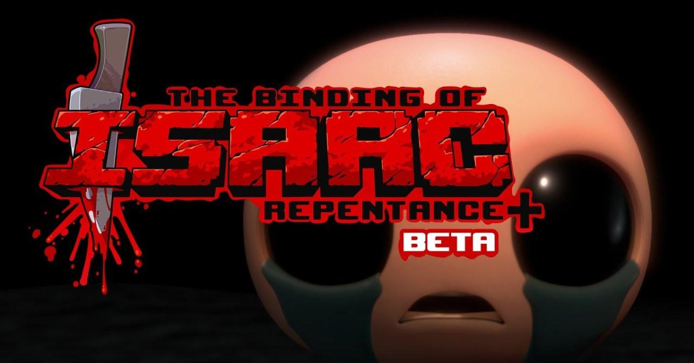

Technology · 23 Nov 2026
Binding of Isaac developer removes AI music from Repentance Plus

The Binding of Isaac: Repentance Plus has spent the last few days getting review-bombed on Steam after it was discovered that a particular segment of the game used AI music. Reddit user ShweetsStuff discovered the songs used during a Grand Theft Auto-themed section. They found several audio files wi
Multiple independent publishers are reporting on the same development: Binding of Isaac developer removes AI music from Repentance Plus.
The available reports place the development in the Technology category. The accounts were compared for agreement on the central event rather than simply shared names or broad topics.
One of the available reports describes the development this way: The Binding of Isaac: Repentance Plus has spent the last few days getting review-bombed on Steam after it was discovered that a particular segment of the game used AI music. Reddit user ShweetsStuff discovered the songs used during a Grand Theft Auto-themed section. They found several audio files with Suno metadata that pointed back to […]
Readers should consult the linked source reports for additional context, updates and details that may change as the story develops.
Sources
This article was produced by the C. O. Eric AI Newsroom from the cited sources. It is published only after automated evidence and safety checks.